Introduction
The intention of this vignette is to show how to plot different styles of cost-effectiveness acceptability curves using the BCEA package.
R code
To calculate these in BCEA we use the bcea()
function.
The plot defaults to base R plotting. Type of plot can be set
explicitly using the graph argument.
ceplane.plot(he, graph = "base")
ceplane.plot(he, graph = "ggplot2")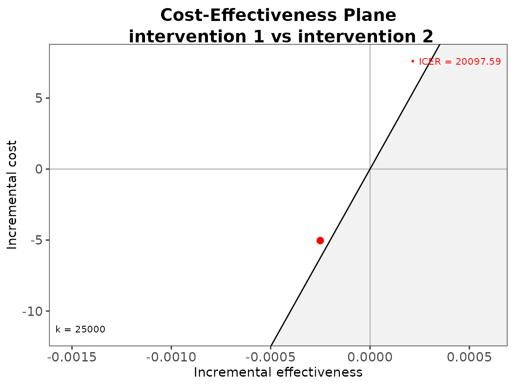
# ceac.plot(he, graph = "plotly")Other plotting arguments can be specified such as title, line colours and theme.
ceplane.plot(he,
graph = "ggplot2",
title = "my title",
line = list(color = "green", size = 3),
point = list(color = "blue", shape = 10, size = 5),
icer = list(color = "orange", size = 5),
area = list(fill = "grey"),
theme = theme_linedraw())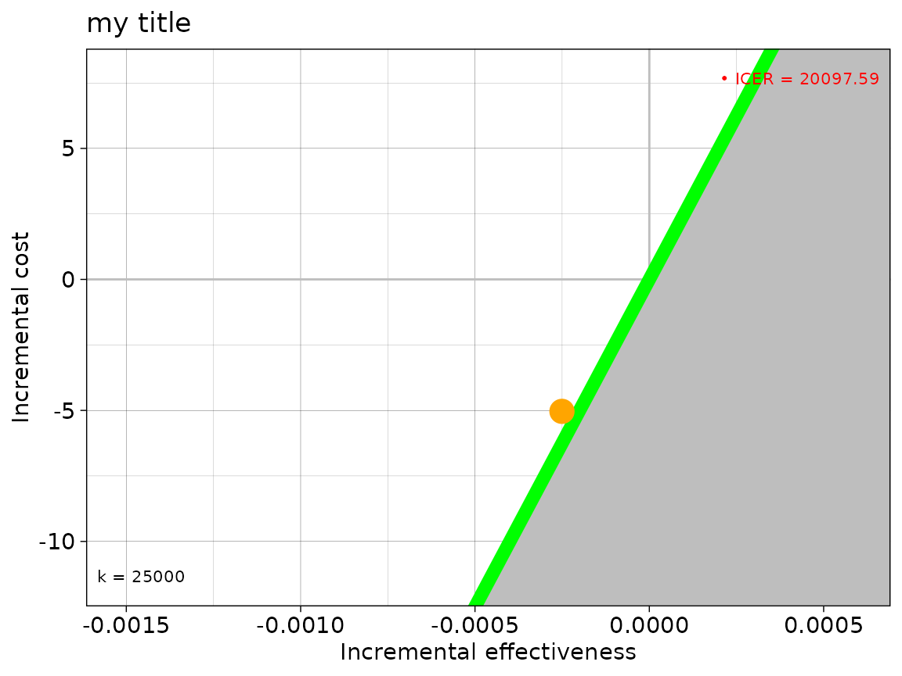
If you only what the mean point then you can suppress the sample
points by passing size NA.
ceplane.plot(he,
graph = "ggplot2",
point = list(size = NA),
icer = list(size = 5))
#> Warning: Removed 1000 rows containing missing values or values outside the scale range
#> (`geom_point()`).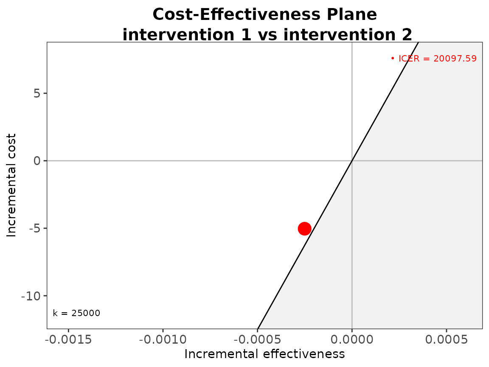
Multiple interventions
This situation is when there are more than two interventions to consider.
R code
Basic plots with defaults.
ceplane.plot(he)
ceplane.plot(he, graph = "ggplot2")
The font size can be adjusted using the text
argument.
ceplane.plot(he, graph = "ggplot2", text = list(size = 20))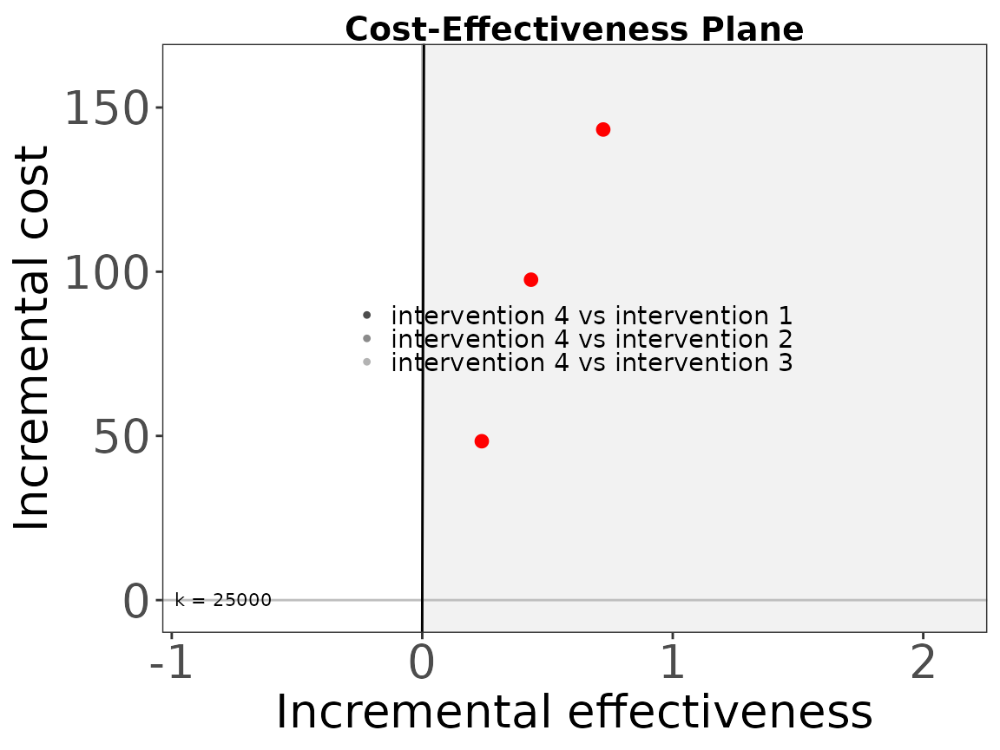
ceplane.plot(he, graph = "ggplot2", text = list(size = rel(2))) # relative scaling, double size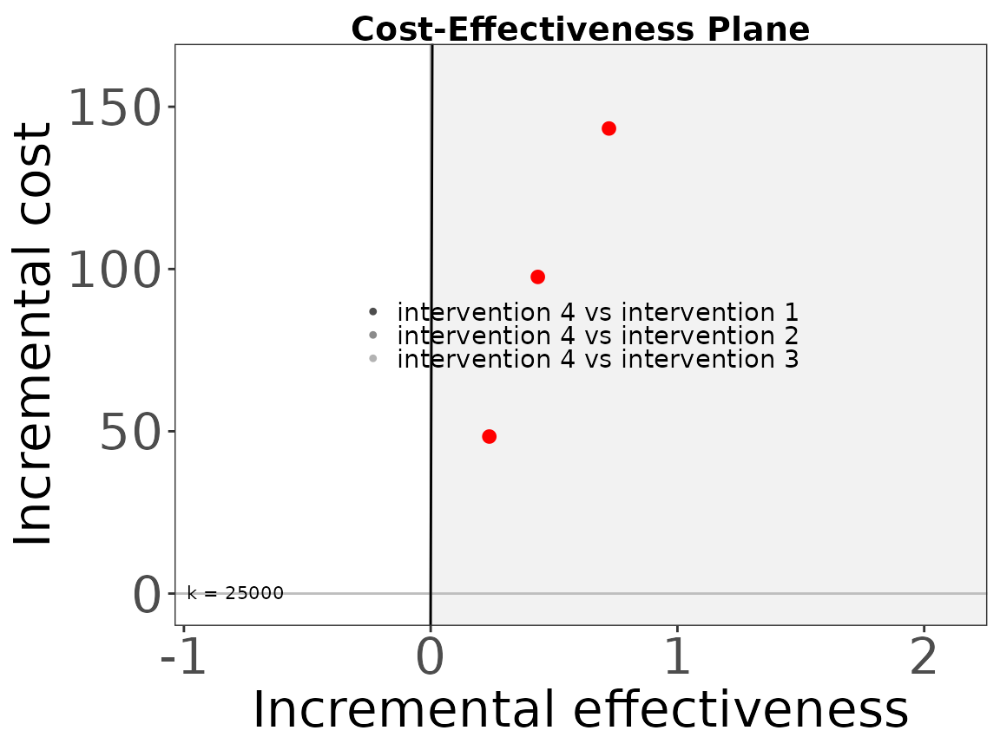
# equivalent but more flexible and direct
ceplane.plot(he, graph = "ggplot2") +
theme(axis.text = element_text(size = 18),
axis.title.x = element_text(size = 20),
axis.title.y = element_text(size = 20))Numerous different styling arguments can be provided.
ceplane.plot(he,
graph = "ggplot2",
title = "my title",
line = list(color = "red", size = 1),
point = list(color = c("plum", "tomato", "springgreen"), shape = 3:5, size = 2),
icer = list(color = c("red", "orange", "black"), size = 5))
There are various different ways to reposition the legend.
ceplane.plot(he, pos = FALSE) # bottom right
ceplane.plot(he, pos = c(0, 0))
ceplane.plot(he, pos = c(0, 1))
ceplane.plot(he, pos = c(1, 0))
ceplane.plot(he, pos = c(1, 1))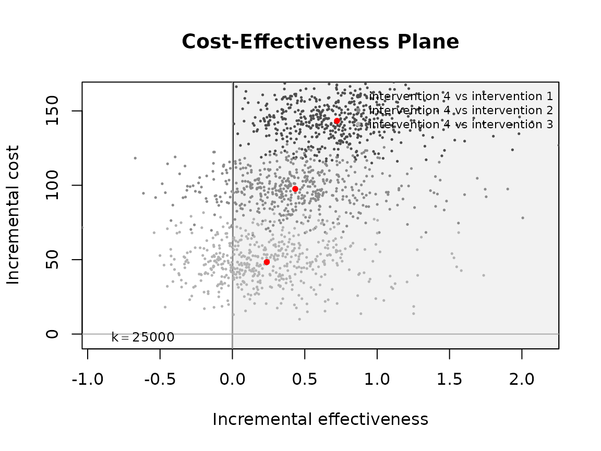
Willingness-to-pay label
For ggplot2 we can modify the willingness-to-pay label e.g. “k = 25000”.
The default is
ceplane.plot(he, graph = "ggplot2")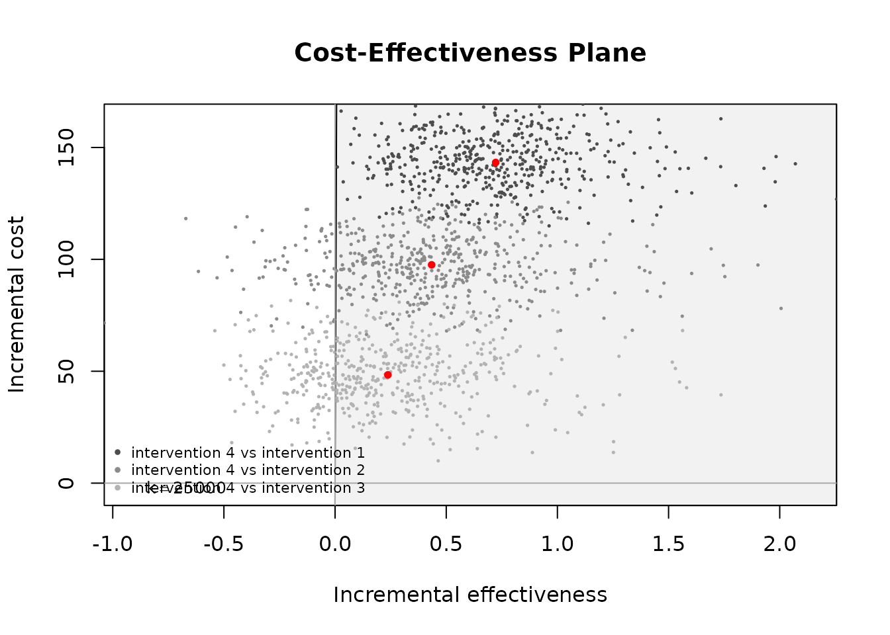
The simplest argument is to set the value of the willingness-to-pay
threshold using wtp.
ceplane.plot(he, graph = "ggplot2", wtp = 10000)
Alternatively, we can pass a list of arguments to wtp to
modify the appearance of the label.
ceplane.plot(he, graph = "ggplot2", wtp = list(value = 10000))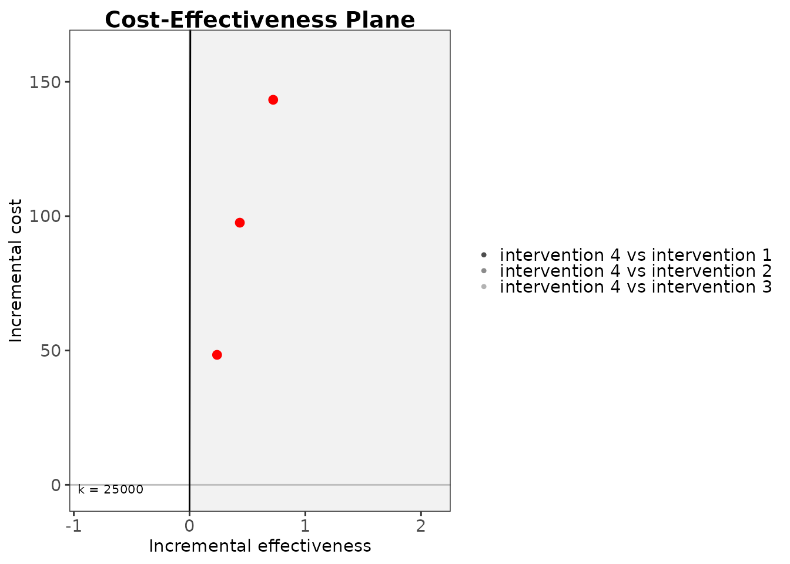
ceplane.plot(he, graph = "ggplot2", wtp = list(value = 10000, colour = "blue"))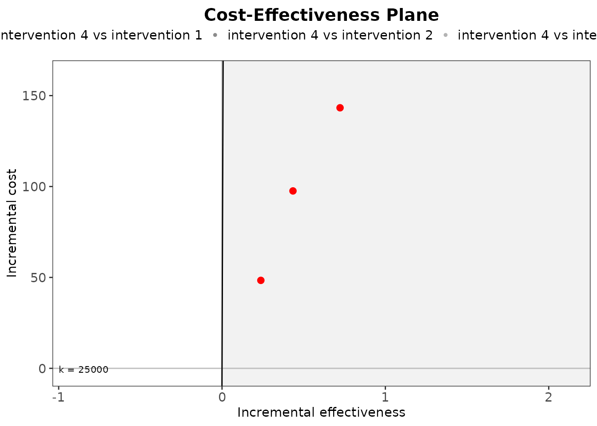
ceplane.plot(he, graph = "ggplot2", wtp = list(colour = "blue"))
ceplane.plot(he, graph = "ggplot2", wtp = list(size = 5))
To hide the text assign size = 0.
ceplane.plot(he, graph = "ggplot2", wtp = list(size = 0))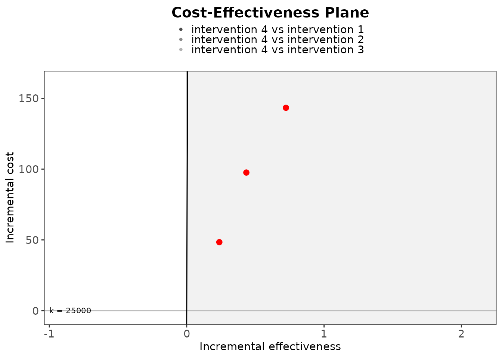
The label is placed at the left hand side of the plot next to the willingness-to-pay line by default. When this would mean the label is off the bottom of the plot it is positioned at the bottom left corner.
data("Vaccine")
he <- bcea(eff, cost, ref=2)
ceplane.plot(he, graph = "ggplot2")
ceplane.plot(he, graph = "ggplot2", wtp = 1000, xlim = c(-0.0005, 0.0015))
ceplane.plot(he, graph = "ggplot2", wtp = 10000, xlim = c(-0.0005, 0.0015))
ceplane.plot(he, graph = "ggplot2", wtp = 25000, xlim = c(-0.0005, 0.0015))
ceplane.plot(he, graph = "ggplot2", wtp = 50000, xlim = c(-0.0005, 0.0015))The position of the label can be adjusted using the
label.pos argument and a logical value.
ceplane.plot(he, graph = "ggplot2", wtp = 1000, xlim = c(-0.0005, 0.0015), label.pos = TRUE)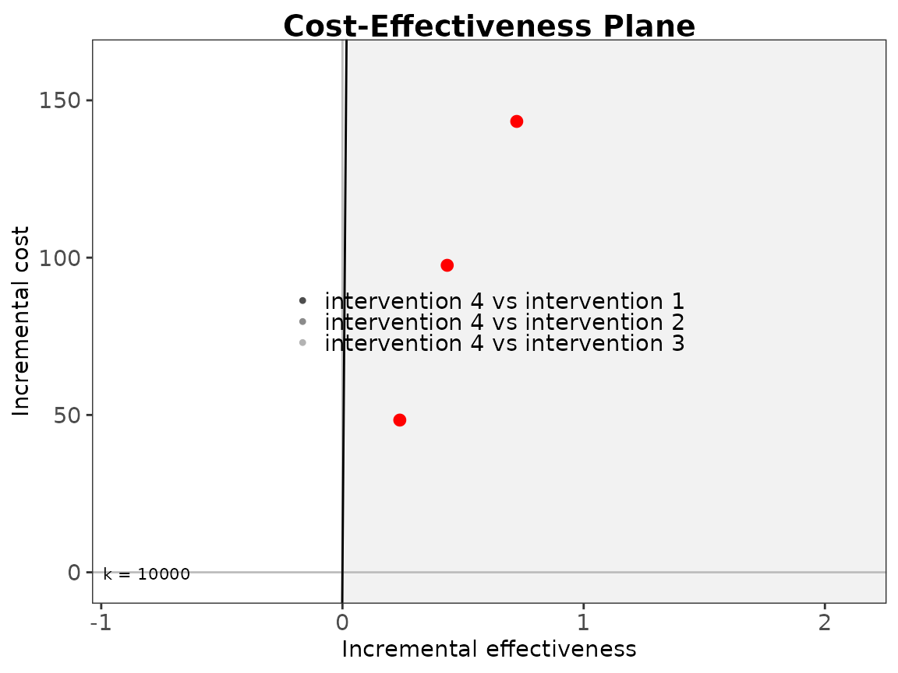
ceplane.plot(he, graph = "ggplot2", wtp = 1000, xlim = c(-0.0005, 0.0015), label.pos = FALSE)A direct way of specifying the position of the label is to use the
wtp argument and set the y value in a
list.
ceplane.plot(he, graph = "ggplot2", wtp = list(y = 8))
For base R
ceplane.plot(he) # default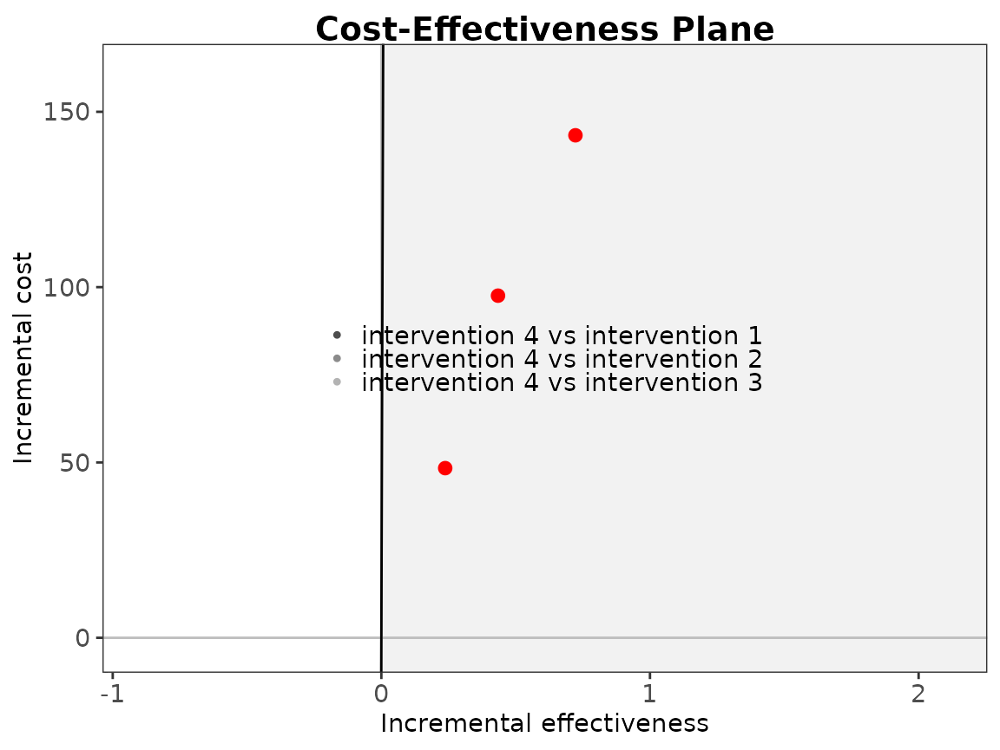
ceplane.plot(he, wtp = 1000, xlim = c(-0.0005, 0.0015))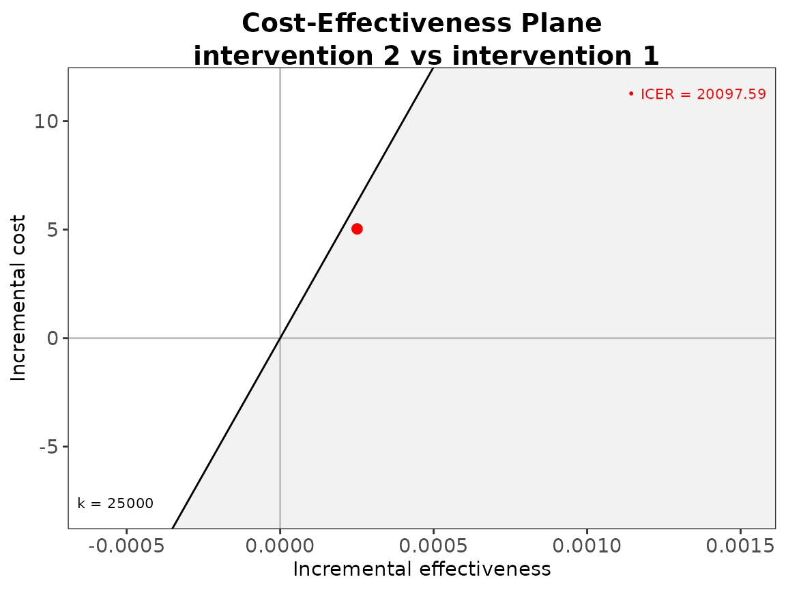
ceplane.plot(he, wtp = 10000, xlim = c(-0.0005, 0.0015))
ceplane.plot(he, wtp = 25000, xlim = c(-0.0005, 0.0015))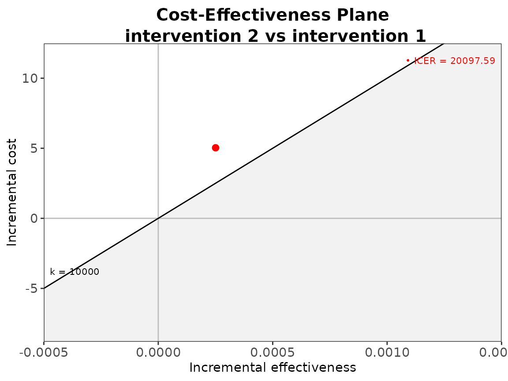
ceplane.plot(he, wtp = 50000, xlim = c(-0.0005, 0.0015))
ceplane.plot(he, wtp = 1000, xlim = c(-0.0005, 0.0015), label.pos = TRUE)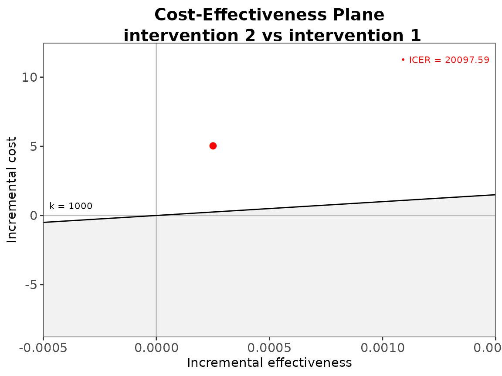
ceplane.plot(he, wtp = 1000, xlim = c(-0.0005, 0.0015), label.pos = FALSE)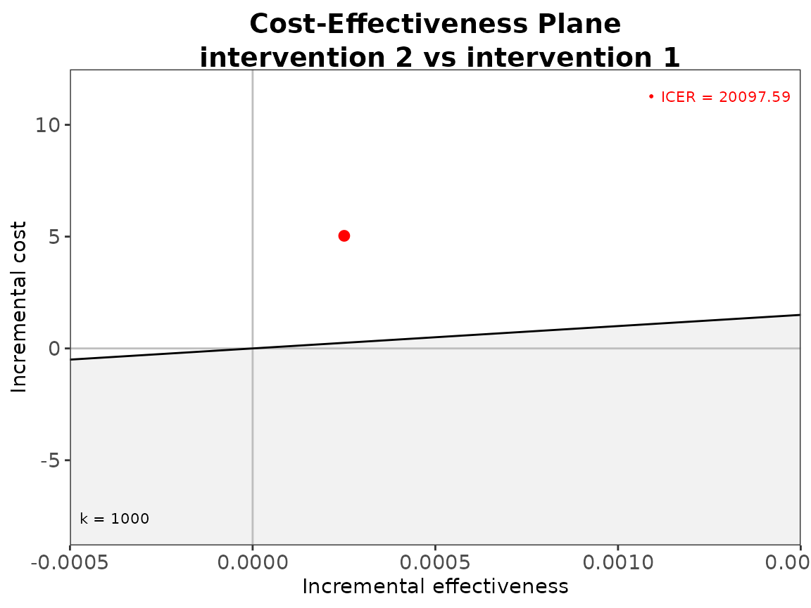
##TODO: not yet implemented ggplot syntax for base R
# ceplane.plot(he, wtp = list(value = 10000))
# ceplane.plot(he, wtp = list(value = 10000, colour = "blue"))
# ceplane.plot(he, wtp = list(colour = "blue"))
# ceplane.plot(he, wtp = list(y = 8))
# ceplane.plot(he, wtp = list(size = 5))
#
# # to hide text
# ceplane.plot(he, wtp = list(size = 0))